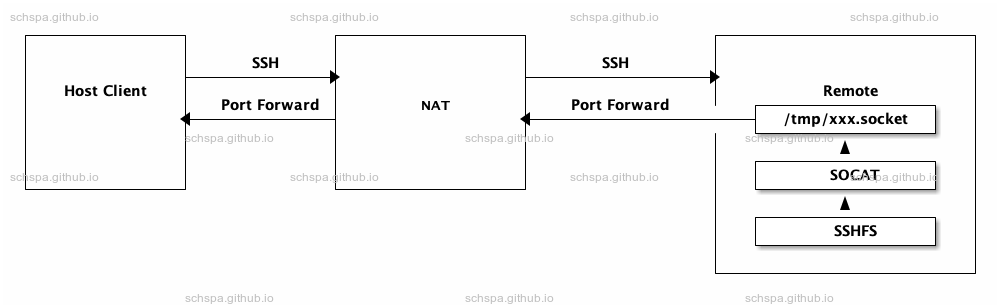

SSHFS behind NAT
Table of Contents
system diagram

Figure 1: System Diagram
Mount local directory to remote server
open a portforward when connect via ssh
ssh -o StreamLocalBindUnlink=yes -R /tmp/$(id -n -u)_local.socket:localhost:22 schspa@remote.com
test ssh connect via unixsocket
ssh -o UserKnownHostsFile=/dev/null -o StrictHostKeyChecking=no -o "ProxyCommand socat - UNIX-CLIENT:/tmp/$(id -n -u)_local.socket" schspa@localhost
mount sshfs via unixsocket
sshfs -o UserKnownHostsFile=/dev/null -o StrictHostKeyChecking=no -o ProxyCommand="socat - UNIX-CLIENT:/tmp/%r_local.socket" -o idmap=user,uid=$(id -u),gid=$(id -g) -o auto_unmount schspa@localhost:/Volumes/work ~/work